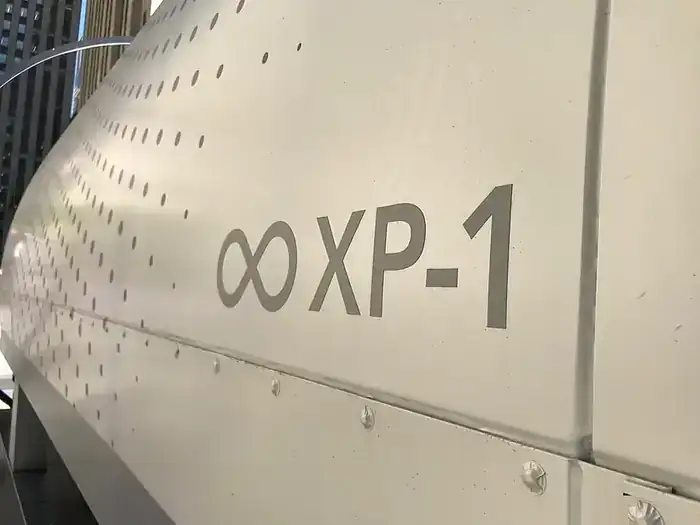
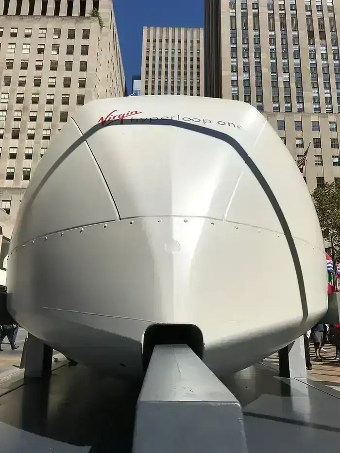

The proposal
The 2013 Tesla and SpaceX white paper proposed passenger capsules levitated in a steel tube at reduced pressure, accelerated by linear motors, cruising at around 1,200 km/h between Los Angeles and San Francisco in about 35 minutes, with solar panels on the tube supplying power.
Maps, diagrams and images




The physics is not the problem. In a low-pressure tube, drag falls enough that the required power is manageable, and magnetic levitation works — it has worked in Shanghai since 2004 at 430 km/h in open air.
The engineering problems
Thermal expansion. A steel tube hundreds of kilometres long expands by hundreds of metres between winter and summer. That movement has to go somewhere: expansion joints that hold vacuum, or a design that tolerates the strain. No large vacuum structure of this length has ever been built.
Alignment. At 1,200 km/h a capsule covers 330 metres a second. The tube must be straighter than any motorway, which means tunnels, viaducts and land acquisition on a scale that dominates the cost.
Evacuation. A capsule stopped inside a low-pressure tube 100 km from either end is a life-support problem with no precedent. Airliners solve it with pressurised cabins and rapid descent; a vacuum tube solves it with nothing.
Capacity. A system carrying a few dozen people per capsule at very high frequency is competing with a high-speed rail line that carries a thousand per train at 320 km/h — a technology that already exists, is certified, and costs less.
Documented: a handful of test tracks were built and a 500-metre full-scale test in the Nevada desert ran in 2020 with passengers. Virgin Hyperloop abandoned passenger transport in 2022 and pivoted to freight; Hyperloop One shut down in 2023 and sold its assets.
Not documented: any operating passenger system, any route with a certified safety case, or any cost estimate that survived independent review.
The honest state: the concept is not debunked as physics, and it is not a project. It is an idea with a prototype and no business case.
The archive labels this live debate because serious engineers still publish on it and the numbers remain arguable — but the burden of proof is on a system that must beat existing rail on cost per passenger, not on speed.
Why it is in the archive
Because it is the modern archetype of a technology that is oversold by a beautiful rendering and undercosted by its promoters.
Related: Dyson swarms, and space elevator materials — the same pattern of a real physical idea blocked by materials and maintenance.
Sources for this page
- Wikipedia, “Hyperloop” — proposals, prototypes, cancellationsen.wikipedia.org
- Tesla (2013), the original Hyperloop Alpha paperwww.tesla.com
- Wikipedia, “Virgin Hyperloop” — the test programme and pivoten.wikipedia.org
- Wikipedia, “Shanghai maglev train” — the operating comparisonen.wikipedia.org
Open resources on this topic
- PapersOpen-access articles: DOAJ · PubMed Central · Internet Archive Scholar
- BooksPublic-domain and borrowable copies: Open Library · Project Gutenberg · Google Books · Internet Archive
Cite this page
Momin, S. (2026). Hyperloop Feasibility. The Larger World Archive. https://drsamonline.github.io/LARGE_GLOBE/hyperloop.htmlMomin, Sohil. “Hyperloop Feasibility.” The Larger World Archive, 2026, https://drsamonline.github.io/LARGE_GLOBE/hyperloop.html.Momin, Sohil. “Hyperloop Feasibility.” The Larger World Archive, 2026. https://drsamonline.github.io/LARGE_GLOBE/hyperloop.html.@misc{hyperloop2026hyperloop,
author = {Momin, Sohil},
title = {Hyperloop Feasibility},
year = {2026},
howpublished = {The Larger World Archive},
url = {https://drsamonline.github.io/LARGE_GLOBE/hyperloop.html},
note = {Last reviewed 20 November 2026}
}Last reviewed 20 November 2026 · Corrections policy · this page is not peer reviewed